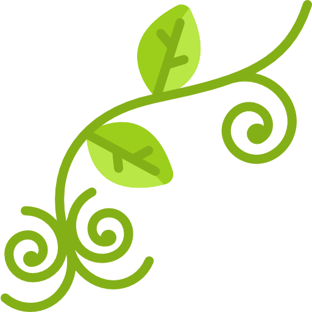
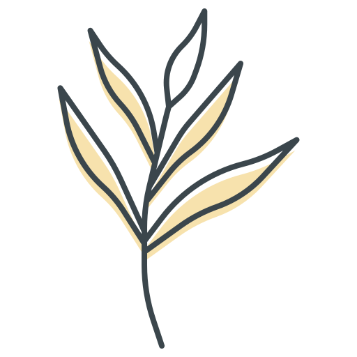
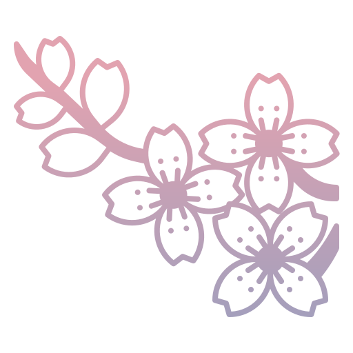

Septiembre 30 de 2026
Babe: 🙈❤️
La verdad, no sé muy bien cómo empezar estas líneas, porque me da mucho gusto saber que vienen cosas nuevas y
bonitas para ti, pero al mismo tiempo me da un poquito de tristeza pensar que ya no vamos a compartir el día a
día como hasta ahora.
Quiero que sepas que me llevo con mucho cariño todo lo que compartimos. Gracias por cada plática, cada risa,
por tu confianza y por esos pequeños momentos que quizá parecían cualquier cosa, pero que con el tiempo se
vuelven recuerdos muy bonitos. Me alegra mucho haberte conocido y haber coincidido contigo, porque más allá de
ser una excelente compañera, te convertiste en una gran amiga a la que le tengo un cariño muy especial.
Gracias también por tu apoyo, por tu paciencia y por siempre tener la disposición de ayudar. Admiro muchísimo
la mujer que eres. Eres una mujer bien chingona, con un corazón enorme y una empatía que se nota en tu forma
de tratar a los demás. Tienes esa bonita capacidad de escuchar, de preocuparte por las personas y de brindar
tu apoyo cuando alguien lo necesita. Ojalá nunca pierdas esa esencia tan bonita que te hace ser tú, porque
hacen falta más personas como tú en este mundo. Nunca dudes de lo valiosa que eres ni de todo lo bonito que
puedes aportar a la vida de quienes tenemos la fortuna de conocerte.
De corazón, deseo que esta nueva etapa venga llena de oportunidades, aprendizajes y muchas razones para
sentirte orgullosa de ti misma. Estoy seguro de que te irá muy bien, porque tienes muchísimo talento, una gran
calidad humana y cualidades que te van a abrir muchas puertas. Además, creo firmemente que a las personas
buenas, que tienen un corazón bonito y hacen las cosas con buenas intenciones, tarde o temprano les llegan
cosas bonitas. Y tú eres una de esas personas que merecen que la vida les devuelva todo lo bueno que dan a los
demás. Ojalá esta nueva etapa te traiga muchas alegrías, oportunidades y motivos para sonreír. Y aunque me va
a hacer falta tenerte cerca, me da mucha alegría saber que vas a seguir creciendo y cumpliendo tus metas.
Gracias por tu amistad, Caro. ❤️ Por las risas, las pláticas, el apoyo y por haber sido parte de tantos
momentos que recordaré con una sonrisa. A veces uno no se da cuenta de cuánto aprecia compartir sus días con
alguien hasta que llega el momento de tomar caminos diferentes, y creo que eso es lo que me pasa ahora.
Pero no quiero que esto suene a una despedida triste, porque de verdad espero que sigamos hablando, que nos
sigamos contando nuestras cosas y que, aunque ya no coincidamos todos los días, nuestra amistad siga estando
ahí. Al final, las personas que uno aprecia de verdad merecen seguir formando parte de su vida, sin importar
dónde estén.
Te quiero mucho y te deseo lo mejor en todo lo que viene. Nunca olvides lo increíble que eres, todo lo que
vales y la huella bonita que dejas en las personas que te rodean. Y recuerda que aquí tienes a un amigo que te
estima muchísimo, que se preocupa por ti y que siempre se va a alegrar de verte crecer, cumplir tus sueños y
ser feliz.
No es un adiós, Babe, es un hasta pronto. 🫶🏻
Con mucho cariño,
Alfonso ✨

